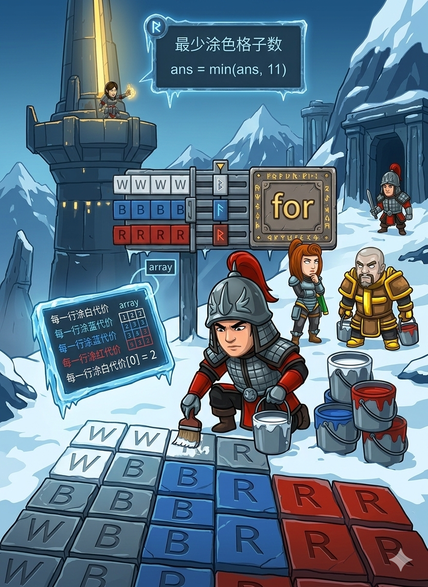

你面前有一块 N 行 M 列 的旗布，上面画满了 'W'(白)、'B'(蓝)、'R'(红) 的小方格。
合法的雪山三色旗必须满足：
你的任务： 算出最少需要重新涂几个方格，才能让旗布变合法！
这块旗布有 N 行。既然必须是“白-蓝-红”三段，我们就可以拿出 “魔法剪刀” ✂️，在旗布上横着剪两刀，把它分成上、中、下三部分！
💡 解题秘籍： 我们事先不知道剪在哪里最省颜料。那就把所有可能的剪法都试一遍！（也就是枚举所有的分界线）
costW、costB、costR，记录下每一行如果变成白色、蓝色、红色，分别需要改几笔。这叫“预处理”，能大大加快计算速度！INT_MAX： 因为我们要找“最小的代价”，一开始就把答案设置为无穷大 INT_MAX (在 <climits> 工具箱里)。只要找到比它小的，就把它替换掉！for(i) 代表白色的行数，for(j) 代表蓝色的行数。剩下的 k = N-i-j 就是红色的行数啦！#include <iostream> #include <vector> #include <string> #include <climits> // ♾️ 无穷大魔法 INT_MAX 藏在这里！ using namespace std; int main() { int N, M; cin >> N >> M; vector<string> grid(N); for (int i = 0; i < N; ++i) { cin >> grid[i]; // 读入旗布的样子 } // 📝 预处理：算好每一行变成 W, B, R 各需要涂几块 vector<int> costW(N, 0), costB(N, 0), costR(N, 0); for (int i = 0; i < N; ++i) { for (char c : grid[i]) { if (c != 'W') costW[i]++; // 不是白色的，涂白代价+1 if (c != 'B') costB[i]++; // 不是蓝色的，涂蓝代价+1 if (c != 'R') costR[i]++; // 不是红色的，涂红代价+1 } } int ans = INT_MAX; // 🏆 最终答案先设为无穷大 // ✂️ 开始尝试各种剪法！ // i 是白色行的数量 (至少1行，最多给蓝色和红色留2行，所以 i <= N-2) for (int i = 1; i <= N - 2; ++i) { // j 是蓝色行的数量 (至少1行，最多给红色留1行，所以 j <= N-i-1) for (int j = 1; j <= N - i - 1; ++j) { int k = N - i - j; // k 就是剩下留给红色行的数量 int total = 0; // 记录这种剪法的总代价 // 第 1 段：前 i 行涂白 for (int r = 0; r < i; ++r) total += costW[r]; // 第 2 段：接下来的 j 行涂蓝 for (int r = i; r < i + j; ++r) total += costB[r]; // 第 3 段：最后的 k 行涂红 for (int r = i + j; r < N; ++r) total += costR[r]; // 💡 如果这次的代价比之前记录的还小，就更新答案！ if (total < ans) ans = total; } } // 🎉 输出最小的涂改数量 cout << ans << endl; return 0; }
i 和 j 的时候，边界非常重要。必须保证白、蓝、红每种颜色都至少占据一行，这就是为什么循环的上界是 N-2 和 N-i-1 的原因啦！